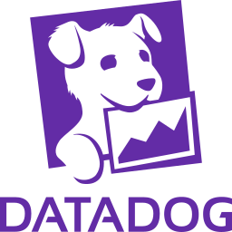
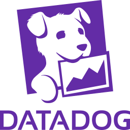

2007
2008
2009
2011
2013
2015
Patric Debois
En 2007, Debois empezó a trabajar en un exigente proyecto de migración de centros de datos para un ministerio belga. Era responsable de las pruebas de certificación y preparación, lo que le obligaba a colaborar estrechamente tanto con la aplicación equipos de desarrollo y operaciones, incluidos especialistas en servidores, bases de datos y redes.
Uno de los principales retos de un gestor de proyectos era el constante ir y venir entre las partes de desarrollo y operaciones del proyecto. Debois reconoció la necesidad de colaboración entre ambos equipos y empezó a idear formas de mejorar la comunicación.
conferencia Agile, Andrew Shafer
El pasado 2008 se celebró una conferencia Agile en Toronto (Canadá), donde Andrew Shafer intentó organizar una sesión de encuentro llamada "Infraestructura ágil". Desgraciadamente, la sesión recibió comentarios tan negativos que nadie se presentó, incluido el propio Andrew.
Sin embargo, Debois se alegró de encontrar a alguien que compartía sus intereses y asistió a la sesión de todos modos. Cuando se dio cuenta de que era el único allí, buscó a Andrew en el pasillo de la conferencia y entablaron conversación. Más tarde, ese mismo año, crearon un grupo de debate para personas que quisieran compartir sus ideas sobre cómo salvar la distancia entre el desarrollo y las operaciones.
"10+ Deploys a Day: Dev and Ops Cooperation at Flickr"
Al principio, no fueron muchos los que compartieron sus ideas. Pero en junio de 2009, John Allspaw y Paul Hammond dieron una charla titulada "10+ Deploys a Day: Dev and Ops Cooperation at Flickr" en la O'Reilly Velocity Conference. Debois vio el vídeo en streaming.
Así que convocó una reunión de desarrolladores y administradores de sistemas para debatir la mejor manera de salvar la distancia entre dos campos tan distintos.
Debois bautizó este evento como DevOpsDays, que tuvo lugar a finales de octubre de 2009. El evento atrajo la atención de expertos en ambos campos y suscitó animados debates en Twitter, donde el hashtag se acortó a DevOps.
predicción sobre DevOps
En marzo de 2011, Cameron Haight, analista de Gartner, predijo que DevOps seguiría ganando impulso en los próximos años, lo que atrajo más atención hacia el movimiento DevOps.
Muy pronto, empresas de todos los tamaños empezaron a implantar herramientas y métodos DevOps, reconociéndolos como un marco valioso para sus operaciones.
DevOps se convirtió rápidamente en la palabra de moda en la industria de TI, a menudo comparado con Agile como la próxima gran cosa.
"The Phoenix Project"
En 2013, la publicación del libro "The Phoenix Project", escrito por Gene Kim, Kevin Behr y George Spafford, marcó un momento importante en el éxito de DevOps.
Esta obra de ficción narra la historia de un director de TI en una situación aparentemente desesperada al que se le encomienda la tarea de rescatar un proyecto de desarrollo de comercio electrónico de misión crítica que ha salido mal. Por el camino, su enigmático mentor, un miembro de la junta muy versado en las prácticas de fabricación ajustada, le introduce en nuevas perspectivas sobre TI y desarrollo de aplicaciones, incluido el concepto de DevOps.
DevOps en metodología ágil
A medida que DevOps fue ganando terreno en el ámbito empresarial, se incorporó rápidamente a la metodología ágil del Scaled Agile Framework (SAFe) y se extendió a todas las organizaciones.

 
